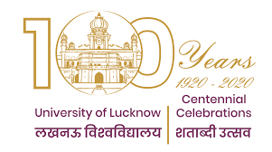
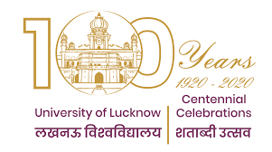

The University of Lucknow or Lucknow University is a public state university based in Lucknow, Uttar Pradesh. Founded in 1867, the University of Lucknow is one of the oldest government owned institutions of higher education in India.
The idea of starting a University at Lucknow was first mooted by Raja Sir Mohammad Ali Mohammad Khan, Khan Bahadur, K.C.I.E. of Mahmudabad, who contributed an article to the columns of "The Pioneer'' urging the foundation of a University at Lucknow. A little later Sir Harcourt Butler, K.C.S.I., K.C.I.E, was appointed Lieutenant-Governor of the United Provinces,
and his well-known interest in all matters under his jurisdiction, specially in matters educational, gave fresh life and vigour to the proposal. The first step to bring the University into being was taken when a General Committee of educationists and persons interested in university education appointed for the purpose, met in conference at Government House, Lucknow, on November, 10, 1919.
At this meeting Sir Harcourt Butler, who was in the chair, outlined the proposed scheme for the new university.
The University of Lucknow strives to be among leading educational institutions of the world by consistently engaging in it’s endeavour through quality teaching, research and innovation rooted in the Indian value system, and working towards building an intellectual infrastructure that serves the country, its society and humanity.